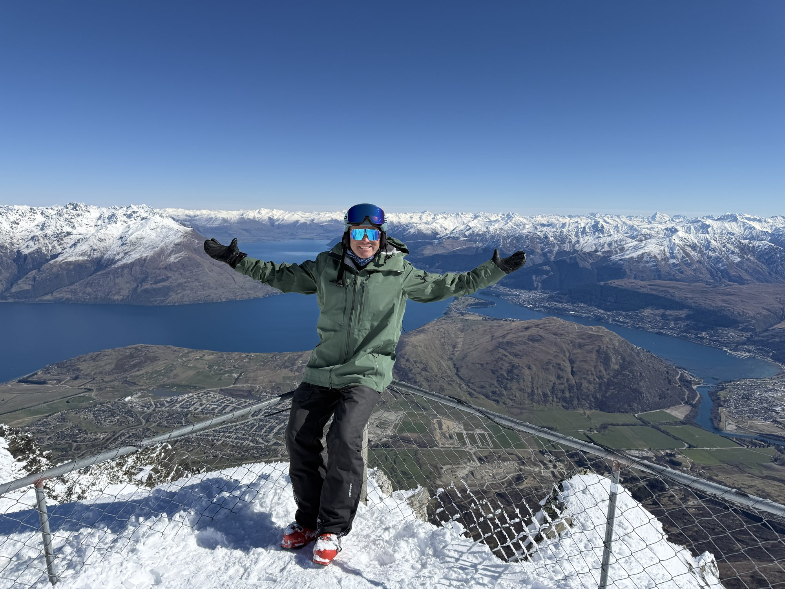
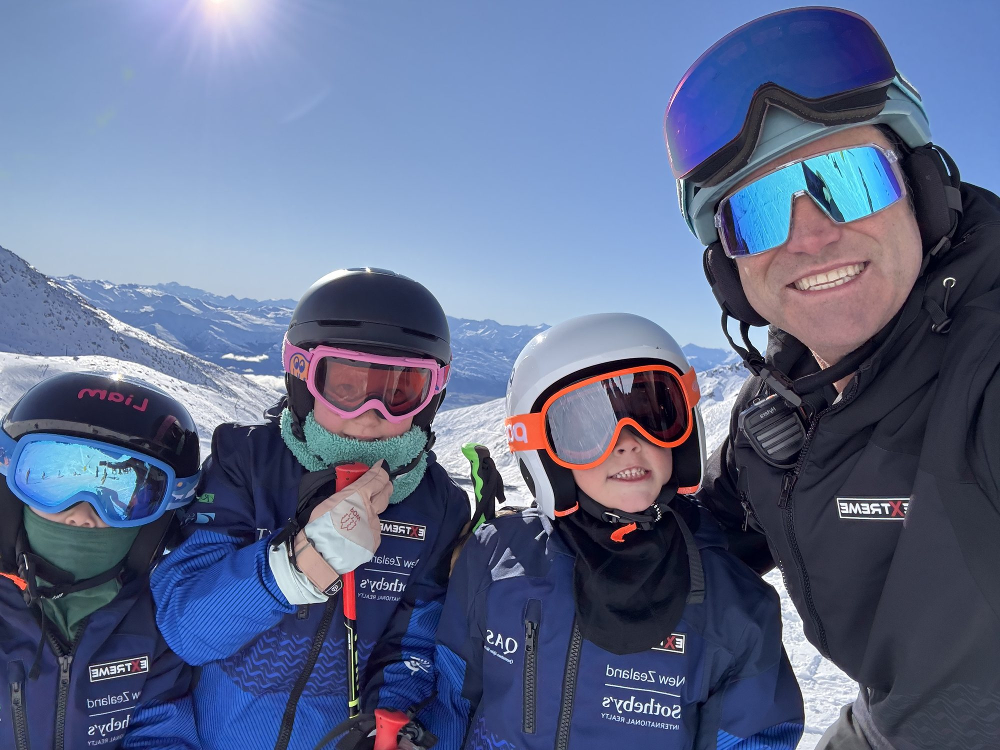
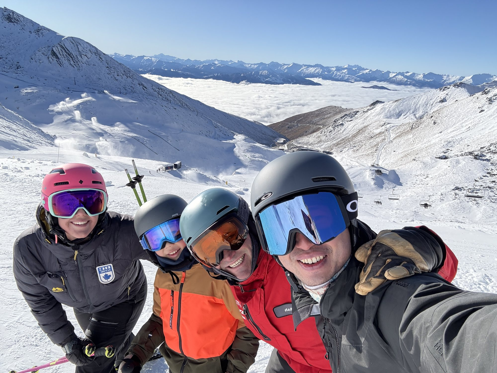
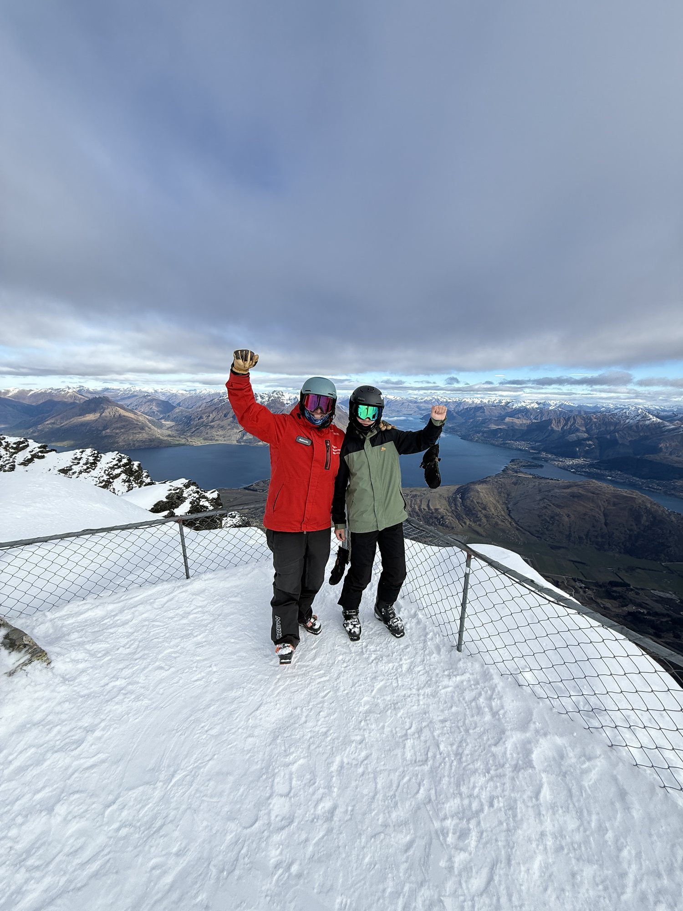

The Remarkables
Welcoming beginner areas, progressive terrain, freeride options and expansive alpine views.
Queenstown · New Zealand
Private coaching at The Remarkables and Coronet Peak, tailored to your ability, group, and goals.
June–October
Two iconic mountains. One extraordinary base. Queenstown brings together varied skiing, spectacular Southern Alps scenery and a vibrant alpine town—all within easy reach.
Welcoming beginner areas, progressive terrain, freeride options and expansive alpine views.
Flowing rollercoaster terrain, varied groomers, extensive views and memorable night skiing.
From first turns and family days to technical coaching and race development, each session can be shaped around you.
Excellent dining, accommodation and adventure activities make Queenstown a complete winter destination.
The Diamond Pro experience
A private day gives us the freedom to choose the Queenstown mountain, terrain and pace that best suit you. From the first lift to the final run, the plan can adapt around your ability, goals and the day’s conditions.
Pick-up and drop-off can be arranged, helping you make the most of your time without worrying about the drive to and from the mountain.
Choose Coronet Peak or The Remarkables, then explore terrain that matches your confidence, ability and ambitions for the day.
We’ll adjust the terrain, focus and pace to keep you in your challenge zone—stretched enough to progress, supported enough to stay confident, and always having fun.
Queenstown pricing

9:00am–3:30pm
$2,050 NZD*1–4 people · The Remarkables or Coronet Peak
 Advanced coaching
Advanced coaching9:00am–3:30pm
$1,500 NZD*1–4 people · The Remarkables

9:00am–3:30pm
$1,450 NZD*1–4 people · The Remarkables or Coronet Peak

9:00am–3:30pm
$1,225 NZD*1–6 people · The Remarkables or Coronet Peak

3 hours
$775 NZD*1–4 people · The Remarkables or Coronet Peak
*Current NZSki product prices shown for guidance. Prices are subject to change; final price and availability are confirmed when booking.